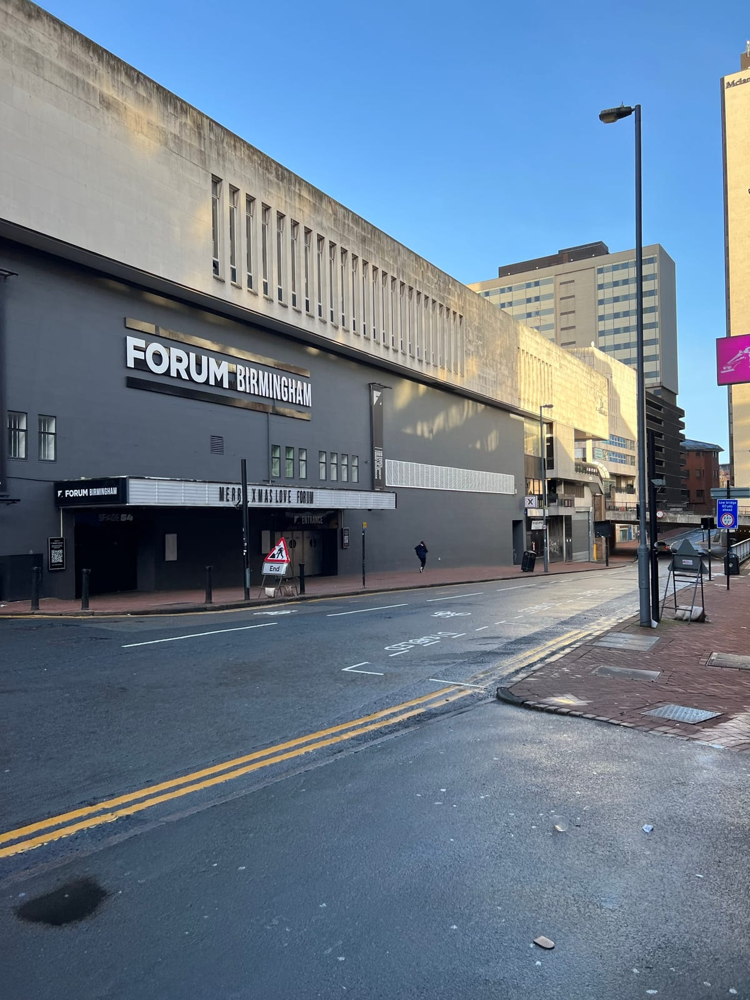
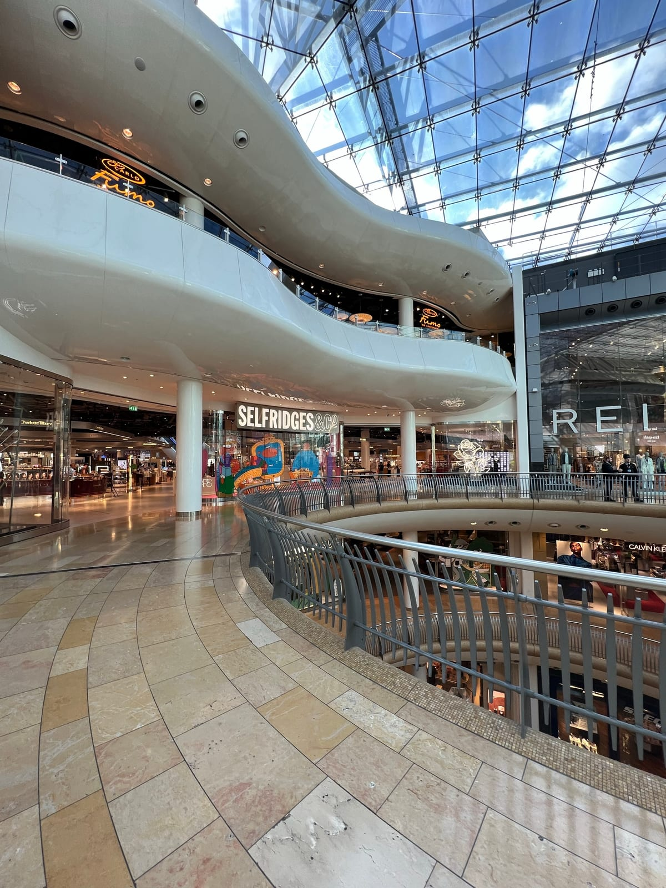
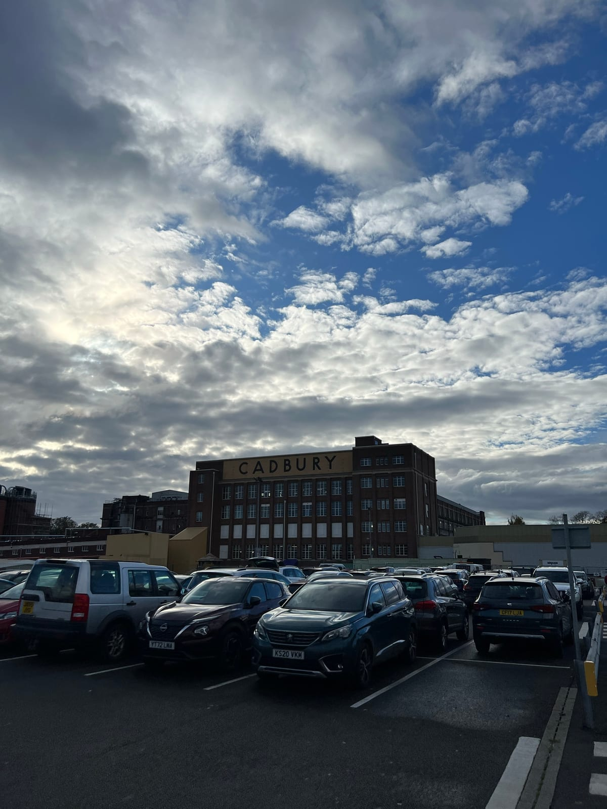
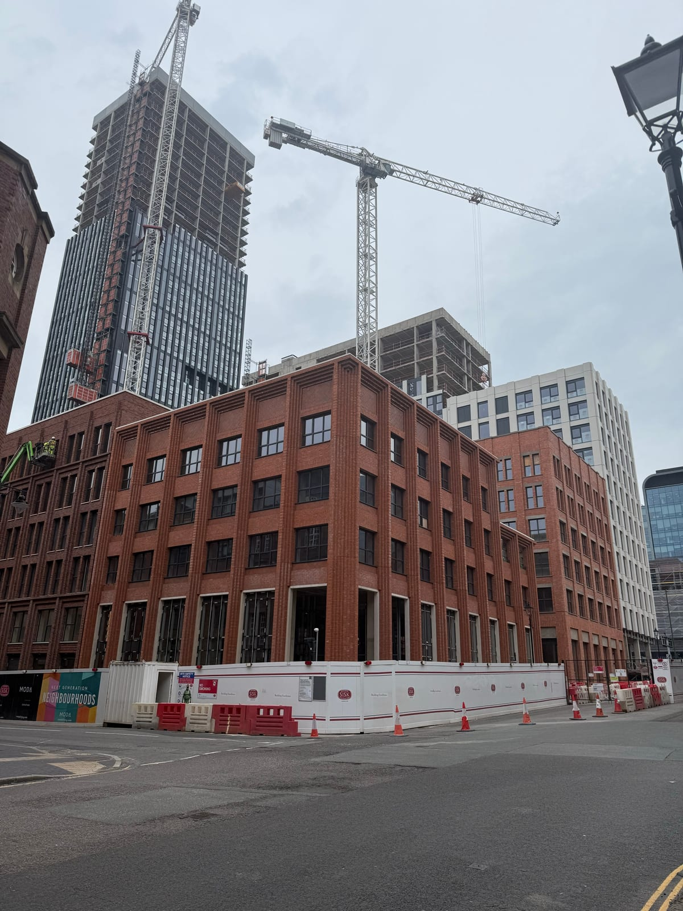
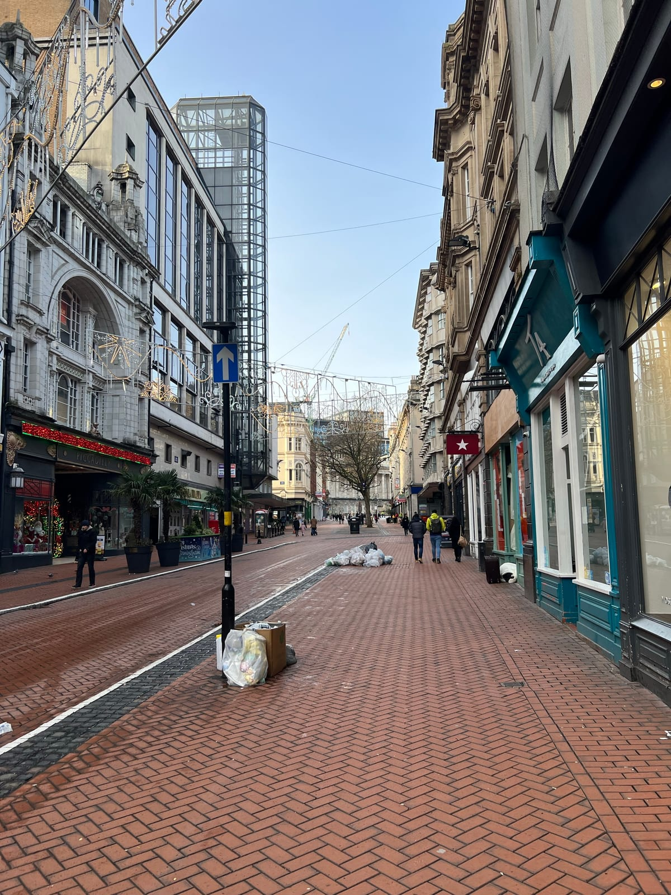
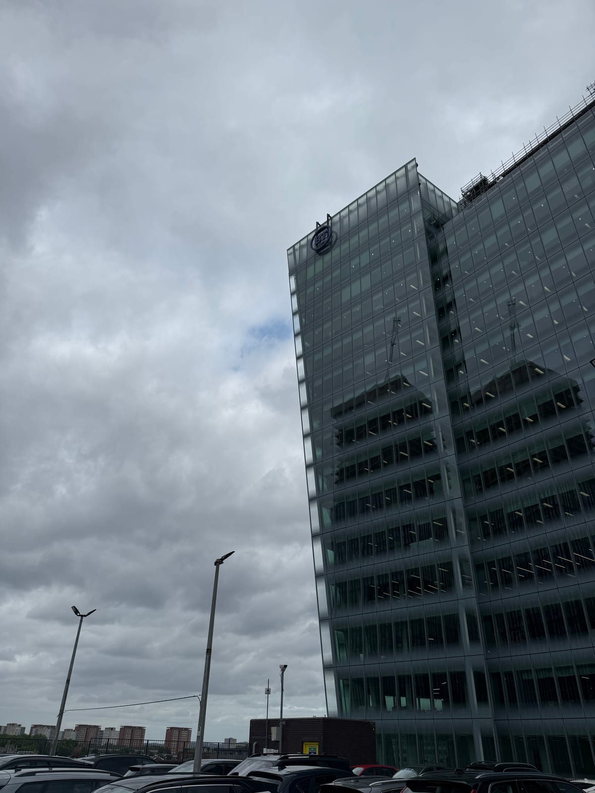
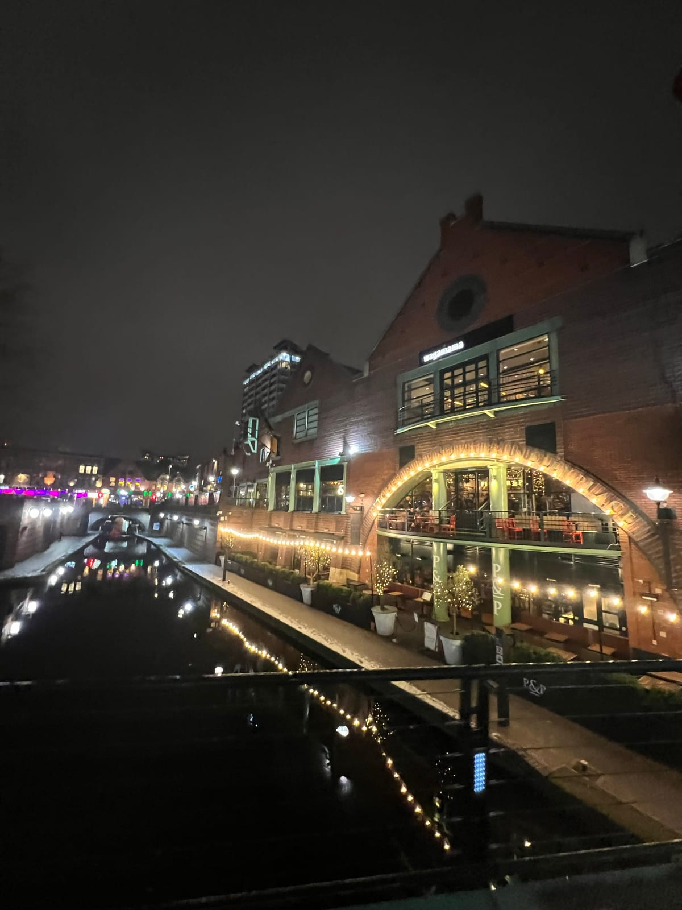
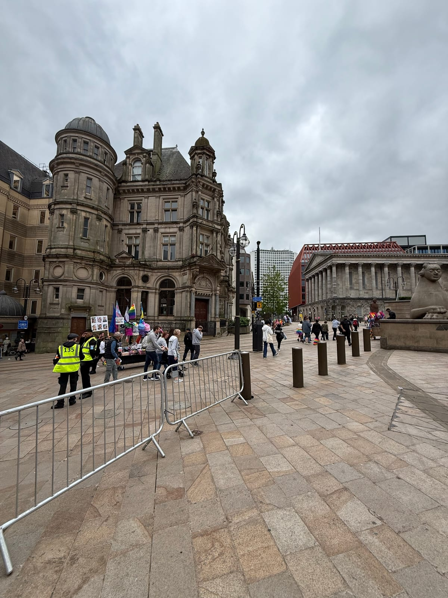

Commercial EPCs for a city of many building types
Birmingham property.One clear route to the certificate.
Offices in the business district, Jewellery Quarter workshops, Digbeth venues and West Midlands industrial space all need a scope matched to the building—not generic city-page copy.
Birmingham · Solihull · Sutton Coldfield · Dudley Building-specific quotations across the conurbation

Birmingham’s commercial fabric
Heritage workshops, towers, shops and sheds.
A property-specific assessment for your sale, letting, renewal or wider compliance requirements.
City-core offices
Corporate floors, professional suites and mixed-use buildings from Colmore to Eastside.
Jewellery Quarter
Heritage workshops, studios, offices and street-level commercial units.
Industrial corridors
Factories, warehouses and trade premises around Aston, Tyseley and beyond.
Digbeth & hospitality
Creative workspaces, venues, restaurants and adapted industrial buildings.

Birmingham & surrounding areas
Many districts. One evidence-led assessment.
What you receive
Useful evidence for the next transaction.
Your EPC records the building’s calculated energy performance and is accompanied by recommendations. We keep the explanation focused on what matters for the property and transaction.
- Registered EPC certificate
- Recommendations report
- Plain-English context
- Direct support
Coordinating access
A practical route through busy commercial premises.
One simple route through the commercial EPC process.
Start your quote →Share the property
Send the address, approximate floor area and preferred timescale.
Complete the assessment
The building fabric, services, lighting and ventilation are recorded on site.
Receive your EPC
The certificate is lodged with its recommendations report and sent to you.
Areas covered
Birmingham-based.West Midlands reach.
Commercial assessments across Birmingham and neighbouring West Midlands towns.
BirminghamSolihullSutton ColdfieldWest BromwichDudleyWolverhampton
Around Birmingham
A city with character.At every scale.
A look at the streets, workplaces and landmarks that shape Birmingham. Local photography for context; buildings shown are not presented as completed client projects.






Your quote starts here
One property.Everything you need.
Choose one assessment or several, then share the property details once. Our step-by-step form keeps everything in one place.
- Postcode address search
- One request for multiple services
- Choose an inspection date and morning or afternoon
A straightforward next step
Build your property quotation.
Commercial EPC · Domestic EPC · TM44 · DEC · EICR · Floor plans · Legionella assessments
Choose your services Eligible Domestic EPCs show an instant price. Other services receive a tailored quotation. Appointments are subject to confirmation.Questions from Birmingham owners
What changes when the building is mixed or altered.
01 · Does a Jewellery Quarter workshop need a different approach?
Heritage character does not determine the assessment on its own. The assessor records the actual construction, present use and fixed services, including changes made over time.
02 · Can you assess a mixed retail and office building?
Yes. Mixed commercial buildings can include several zones with different activity, lighting and services. Send any floor plans so the quotation reflects that layout.
03 · Do you work across Birmingham’s industrial areas?
Yes. Coverage extends from the city core to established industrial and warehouse areas across Birmingham and the wider West Midlands.
04 · What helps with a large or altered property?
Current plans, service schedules, previous certificates and details of extensions or refurbishments help establish zones and reduce uncertainty before the visit.